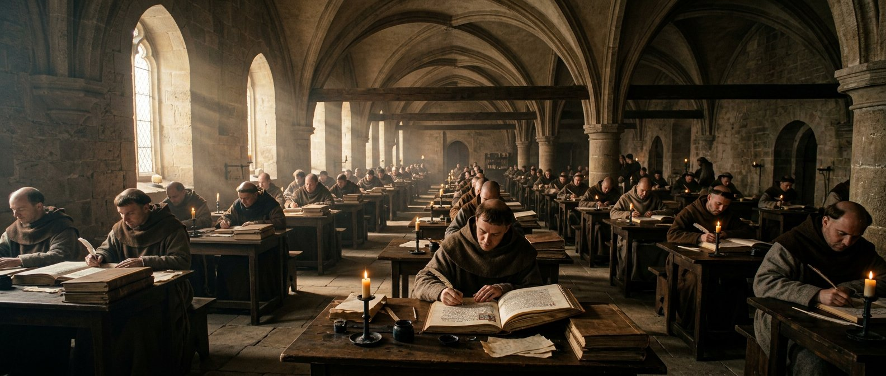

Trois femmes en une seule
Résumé. Pendant plus de mille ans, l'Occident chrétien fusionne trois femmes des Évangiles en une seule : Marie de Magdala, Marie de Béthanie, et la pécheresse anonyme de Luc 7. Le pape Grégoire le Grand scelle cette identification en 591. Marie-Madeleine devient « la grande pécheresse repentie » — image qui marquera l'art et la littérature jusqu'à aujourd'hui.
La rigueur impose de le dire : les Évangiles ne fusionnent jamais ces femmes. En 1969, l'Église catholique elle-même corrige officiellement la confusion liturgique, rendant à Marie-Madeleine sa fête propre de témoin. La légende était puissante ; le texte racontait autre chose.